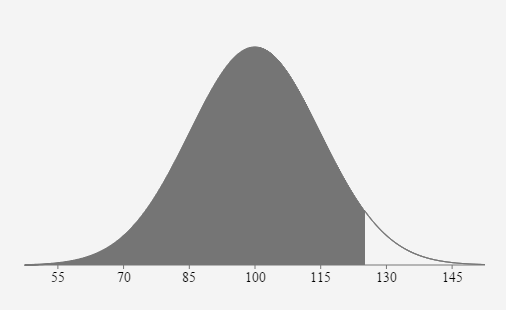

Unit 3 Normal Distributions and Confidence Intervals
5.2 Normal Distributions: Finding Probabilities
Writing your probability statement:
Example \(P(x>10)=P(z>.4136)=\)
Use the following formula to calculate the z scores for your x values: \(z=\frac{x-\mu}{\sigma}\)
Labeling your bell curve:
You will be required to demonstrate your understanding that the probability calculated on the Normal Curve is equal to the corresponding probability calculated on the Standard Normal Curve.
- Label your bell curve with two rows of information on the horizontal axis.
a. z score values Use μ=0 and σ=1.
b. x values Use given μ and σ.
- Shade the probability area. Verify the shaded region matches your probability statement for x and z.
Calculating your probability:
Writing your final statement:
If one __________ is randomly selected, the probability the/their __________ is lessthan/greaterthan/between____________is approximately equal to ______.
- The distribution of IQ scores is normally distributed with a mean of 100 and a standard deviation of 15. Find the probability that a randomly selected score will be below 125.
\(\mu = \)
100 \(\sigma = \) 15 \(z_{125}=\frac{125-100}{15}=1.666667 \approx 1.67\) \(P(x \lt 125)=P(z \lt 1.67)=0.9522\)


If one person’s IQ score is randomly selected, the probability their score is less than 125 is approximately equal to 0.9522 or 95.22%.
- Scores on a history exam are normally distributed with a mean of 73 points and a standard deviation of 8 points. If one exam is randomly selected, what is the probability the score will be between 70 and 85 points?
\(\mu = \)
73 pts \(\sigma =\) 8 pts \(z_{70}=\frac{70-73}{8}=-0.375\) \(z_{85}=\frac{85-73}{8}=1.5\) \(P(70 \lt x \lt 85)=P(-0.375 \lt z \lt 1.5)\)
\( \quad 1-.353830-.066807=0.5794\)


If one exam is randomly selected, the probability the score will be between 70 points and 85 points is approximately equal to 0.5794 or 57.94%.
- The distribution of IQ scores is normally distributed with a mean of 100 and a standard deviation of 15. Find the probability one randomly selected IQ score will be between 90 and 120.
\(\mu = \)
100 \(\sigma = \) 15 \(z_{90}=\frac{90-100}{15} \approx-0.6667\) \(z_{120}=\frac{120-100}{15} \approx 1.3333\) \(P(90 \lt x \lt 120)=P(-0.6667 \lt z \lt 1.3333)=0.6563\)


If one person’s IQ score is randomly selected, the probability their score is between 90 and 120 is approximately equal to 0.6563 or 65.63%.